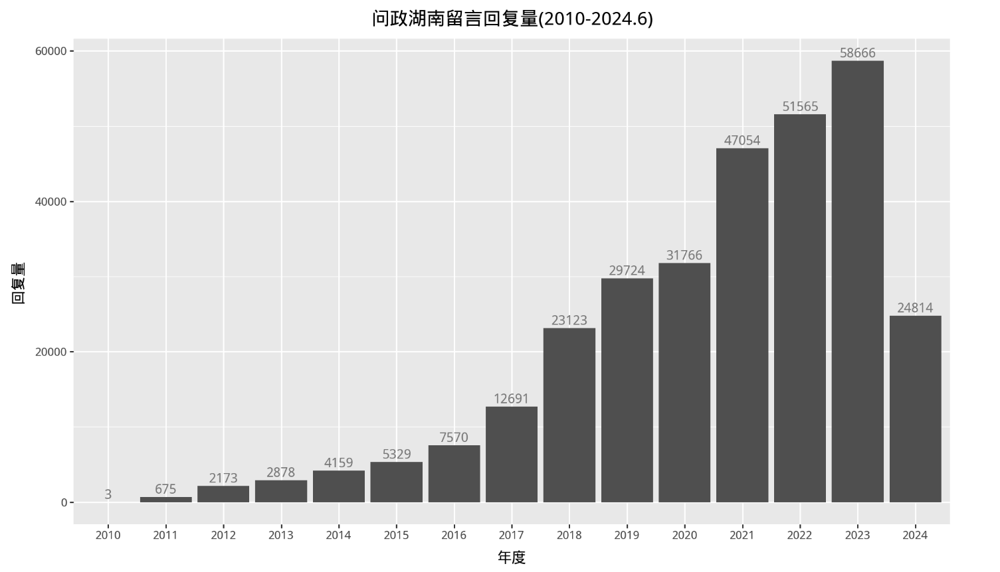

一、数据集
1.1 概况
数据集名称: 问政湖南
网站网址: https://wz.rednet.cn/#/leaveMsgList?reply=1
信息类型: 网民留言、地方机构(领导)回复
所含字段: 用户昵称、留言类型、标题、详细内容、投诉领域(子领域)、地方(省市)、地方领导、是否回复、回复机构、回复内容、回复时间等。
覆盖日期: 2010-10-28 ~ 2024-06-05
采集日期: 2024-06-05
记录条数: 302190
文件格式: csv/xlsx
文件大小: 990M
声明: 科研用途； 如有问题， 请加微信372335839，备注「姓名-学校-专业」
问政湖南，类似于 人民网地方领导留言板， 数据信息量也很大， 网民留言日期2010~2024， 记录数约30w(截止2024-06-05)。 适合社会学、新闻学、公共管理、管理学等领域学者使用。
1.2 声明
科研用途；如有问题， 请加微信372335839，备注「姓名-学校-专业」
二、查看数据
2.1 读取数据
import pandas as pd
df = pd.read_csv('问政湖南.csv.gz',
compression='gzip',
low_memory=False)
df
2.2 字段
人民网地方领导留言板， 只能看2年的数据， 除非爬虫早于2年前运行，否则无法阅读到2年前的数据。而且人民网存在改版， 字段无法对齐。
而问政湖南网， 不同于人民网html格式， 采用的json数据存储， 字段更干净整洁。所以我们采集到的数据从2011到2023， 无需做字段对齐操作，拿来直接入库。
for col in df.columns:
print(f' - {col}')
Run
- nickname 留言者昵称
- type_name 类型,如投诉、举报等
- title 留言标题
- content 留言内容
- desc 留言内容(与content内容略微不同)
- cate_child_name 问政主题子领域， 违规补课
- cate_name 问政主题， 如教育、交通等
- created_at 留言时间
- mobile 留言设备
- star 留言获得的点赞数
- company 地方机构，如市政府、市委等
- job 领导岗位， 如市委书记、市长等
- is_reply 是否回复, 1已办理， 2办理中
- reply_name 回复机构名，如市委办公室、
- is_self 是否为job自己回复
- reply_content 回复内容
- reply_is_edit 回复内容是否编辑
- reply_time 回复时间
- reply_published_at 回复内容发布时间
- done_time 完成时间
- reply_star 回复得到的点赞数
- reply_video 回复视频链接
- updated 留言更新时间
- crawl_date 数据采集日期
2.3 起止日期
df['created_at'] = pd.to_datetime(df['created_at'])
print('留言日期(起): ', df['created_at'].min().strftime('%Y-%m-%d'))
print('留言日期(止): ', df['created_at'].max().strftime('%Y-%m-%d'))
Run
留言日期(起): 2010-10-28
留言日期(止): 2024-06-05
2.4 年度分布
data = pd.DataFrame(df.created_at.apply(lambda y: y[:4]).value_counts().sort_index().reset_index())
data.columns = ['year', 'count']
data
from plotnine import *
import matplotlib.pyplot as plt
from matplotlib.font_manager import FontProperties
#文泉驿微米黑.ttf位于代码同文件夹
font_prop = FontProperties(fname='文泉驿微米黑.ttf')
data = pd.DataFrame(df.created_at.apply(lambda y: y[:4]).value_counts().sort_index().reset_index())
data.columns = ['year', 'count']
(
ggplot(data, aes(x='year', y='count'))
+geom_col()
+geom_text(aes(label='count'), data=data, va='bottom', color='grey', size=10)
+theme(figure_size=(10, 6),
text = element_text(family = font_prop.get_name()),
plot_title = element_text(family = font_prop.get_name(), size=14)
)
+labs(title='问政湖南留言回复量(2010-2024.6)',
x = '年度',
y = '回复量')
)

2.5 问政主题
查看2010-2024.6年， 不同留 主题类别 的记录数
df['cate_name'].value_counts()
Run
cate_name
住建 59316
交通运输 16812
公安 15855
教育 15781
农业农村 12883
生态环境 10996
人社 9775
城管 9596
市场监管 7464
干部 6075
其他 4685
司法 4646
自然资源 4273
卫生健康 3647
民政 3435
医疗保障 2589
水利 2352
金融 1610
通信 1594
电力 1579
财政税收 1267
物价 1099
商务 489
应急管理 247
特种设备、作业 31
烟花爆竹经营 19
安全生产和管理 10
消防救援 3
电动车违规行为 1
Name: count, dtype: int64
2.6 查看某类词
查看字段 content留言内容, 是否出现 扰民|噪音 等词语
df['content'].fillna('').str.contains('扰民|噪音')
Run
0 False
1 False
2 False
3 False
4 False
...
302185 False
302186 False
302187 False
302188 False
302189 True
Name: content, Length: 302190, dtype: bool
扰民|噪音 相关记录总的记录(回复)数
df['content'].fillna('').str.contains('扰民|噪音').sum()
Run
13292
噪音的留言回复记录占总记录数的比例
df['content'].fillna('').str.contains('扰民|噪音').sum()/len(df)
Run
0.04398557199113141
跟人民网地方领导留言板的结果十分相似，也是4%。
三、相关内容
3.1 相关研究
[1]郑石明, 兰雨潇, 黎枫. 网络公共舆论与政府回应的互动逻辑——基于新冠肺炎疫情期间“领导留言板”的数据分析[J]. 公共管理学报, 2021, 18 (03): 24-37+169.
王磊,易扬.公共卫生危机中的数字政府回应如何纾解网络负面舆情——基于人民网“领导留言板”回复情况的调查[J].公共管理学报,2022,19(04):65-78+169.
[2]Lu, Liangdong, Jia Xu, and Jiuchang Wei. "Understanding the effects of the textual complexity on government communication: Insights from China’s online public service platform." Telematics and Informatics 83 (2023): 102028.
...
3.2 相关推文
数据集(付费) | 人民网地方领导留言板原始文本(2011-2023.12)
词向量 | 使用人民网领导留言板语料训练Word2Vec模型
3.3 相关链接
与 问政湖南网 最相关的网站还有